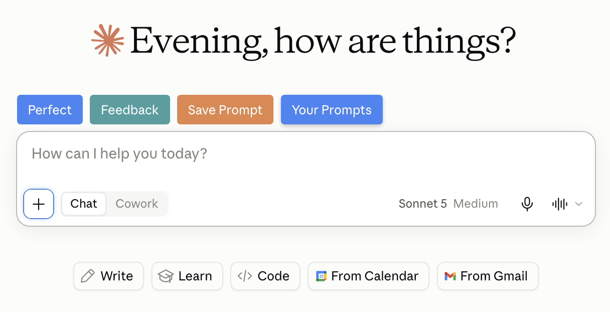
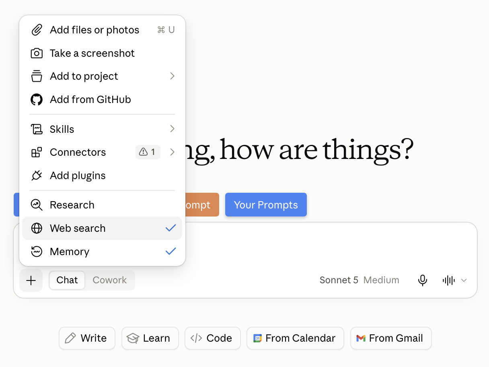
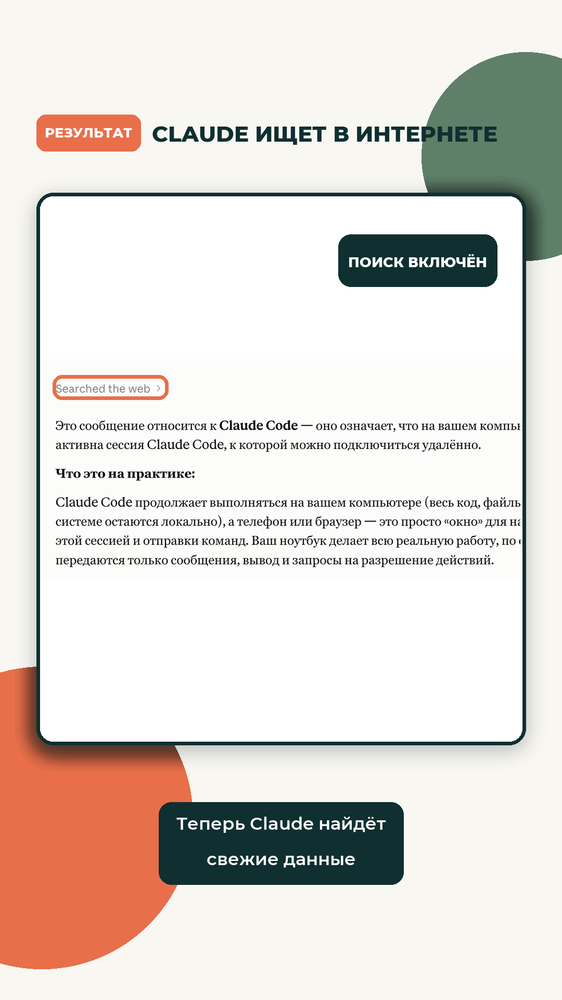

Claude.ai · Web search
Веб-поиск в Claude: ответы со свежими ссылками
Ты спрашиваешь у Claude, сколько сейчас стоит подписка, или какие правила действуют на площадке. Он называет старую цену или отменённое правило так уверенно, что тебе и в голову не приходит это проверять, и ты принимаешь решение по информации, которая уже устарела. Но это лечится одним действием
Если ты ещё не вошёл в Claude, сначала пройди «Claude из России: подключение без блокировок». Там доступ и первый чат, а сюда вернёшься за веб-поиском
Не верить на слово
Зачем Claude нужен веб-поиск
Без Web search Claude не открывает интернет перед ответом. Он собирает ответ из данных, на которых его обучали, и из текущего разговора. Если тариф, закон, расписание или функция изменились позже, этих изменений в его ответе может не быть
Web search добавляет недостающий шаг: Claude сначала открывает свежие страницы, а потом отвечает. Рядом с фактами появляются прямые ссылки на источники, поэтому цену, правило или дату можно сразу проверить
Когда включать: если ответ зависит от того, что действует сегодня. Для переписывания твоего текста или разбора загруженного файла интернет не нужен
Четыре действия
Как включить Web search
Открой Claude в браузере или приложении. Весь путь занимает несколько секунд, отдельную настройку искать не нужно
1. Открой новый чат
Нажми New chat и посмотри на нижнюю часть окна. Слева от поля, куда ты пишешь сообщение, находится квадратная кнопка с плюсом
Результат: перед тобой пустой чат, в котором можно отдельно включить поиск
2. Нажми на плюс
Нажми плюс слева от строки ввода. Откроется меню с файлами, камерой, навыками, подключёнными сервисами и дополнительными режимами Claude

Результат: открылось меню, в котором есть строка Web search
3. Выбери Web search
Найди строку Web search и нажми на неё. Появится галочка рядом с Web search, это означает, что поиск включён для этого чата. Повторное нажатие выключает его

Результат: Claude может обратиться к интернету, когда вопросу нужны свежие данные
4. Задай вопрос
Напиши вопрос обычными словами. Чтобы Claude точно использовал поиск, добавь в конце: «Найди актуальные данные в интернете, укажи дату проверки и дай ссылки на первоисточники»
Результат: во время ответа появится отметка Searched the web, а внутри текста будут ссылки
Контроль ответа
Как проверить ответ и источники
Claude закончил поиск и выдал ответ. Не ориентируйся только на уверенный тон, посмотри на три видимых признака

Проверка за минуту
- В ответе есть отметка Searched the web
- Рядом с фактами стоят ссылки, а не один общий список в конце
- Дата публикации источника подходит вопросу
- Главный факт подтверждают хотя бы два независимых источника
- Для цены, правил и функций открыт первоисточник: сайт компании или официальная справка
Если ссылки нет: попроси Claude показать страницу, на которой он нашёл именно этот факт. Если источник не подтверждает формулировку, факт из ответа использовать нельзя
Можно копировать
Готовые запросы для поиска
Поиск включён, но качество ответа всё равно зависит от вопроса. Эти формулировки сразу задают дату, тип источника и способ проверки
Проверить свежую информацию
Найди актуальную информацию по этому вопросу на сегодня. Сначала проверь официальные источники, затем независимые. Укажи дату каждого важного факта и дай прямые ссылки
Сравнить варианты
Сравни эти варианты по действующим условиям на сегодня. Для цены, ограничений и функций используй официальные страницы. Сведи различия в таблицу и поставь ссылку рядом с каждым проверяемым фактом
Перепроверить готовый ответ
Перепроверь свой предыдущий ответ через веб-поиск. Отдельно перечисли, что подтвердилось, что устарело и где источники расходятся. Не делай вывод без прямой ссылки
Не тратить поиск зря
Когда включать и выключать поиск
Иногда интернет нужен ответу, иногда только добавляет лишние ссылки и расходует лимит. Отличить эти случаи можно по одному признаку: меняется ли ответ со временем
Включай Web search
- новости, события, расписания и результаты
- цены, тарифы, лимиты и условия сервисов
- законы, правила площадок и официальные инструкции
- новые функции программ и актуальные версии
- редкая тема, где особенно нужны ссылки для проверки
Выключай Web search
- переписать твой текст или сократить готовый абзац
- придумать варианты заголовка по присланному материалу
- разобрать файл, который уже лежит в чате
- продолжить идею, где новые факты из интернета не нужны
Честное ограничение
Что происходит с лимитом
На бесплатном аккаунте каждое обращение к веб-поиску и открытие страницы по ссылке расходует общий лимит Claude. Длинная статья по прямой ссылке может занять заметную часть доступного объёма
Если свежие данные не нужны, выключи Web search повторным нажатием на ту же строку. Claude продолжит обычный разговор без обращения к интернету
Как экономить: сначала спроси точный факт или короткое сравнение. Полный разбор длинной страницы заказывай только тогда, когда он действительно нужен
Перед оплатой или решением
Памятка перед важным решением
Если ответ влияет на деньги, здоровье, документы или доступ к аккаунту, не принимай решение по одному сообщению Claude. Он может ошибиться, пропустить важное условие или показать неполную картину. Открой ссылки, проверь ключевой факт в официальном источнике и найди второе независимое подтверждение
Пять последних проверок
- Источник официальный и относится к нужной стране или тарифу
- На странице есть свежая дата обновления
- Цитируемая фраза действительно есть по открытой ссылке
- Второй независимый источник не противоречит первому
- Окончательное действие принято не только по пересказу Claude
Проверено 13 сентября 2026
Источники
- Claude Help Center: Enable and use web search - включение, отметка поиска, ссылки, ограничения и расход лимита
- Claude Help Center: When should I use web search, extended thinking, and research? - когда выбирать обычный веб-поиск
- Anthropic: Claude can now search the web - принцип работы и прямые цитаты источников
Бесплатный практикум
Повтори каждый шаг на своём проекте
ИИ-Лагерь - это бесплатный прикладной практикум по вайб-маркетингу на Claude Code и Codex. Здесь не читают лекции, а показывают каждый шаг на экране. Ты повторяешь и собираешь своё без кода и технических знаний
Хочу на бесплатный практикум